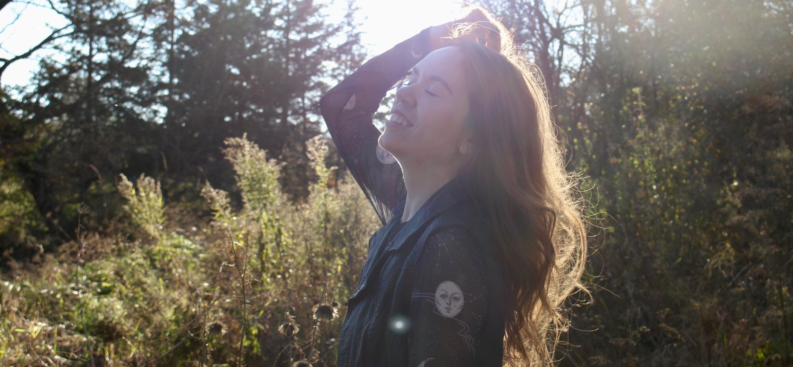

S’accepter pleinement
grâce à l’astrologie
grâce à l’astrologie

Astrologue depuis maintenant quatre ans, j'explore ce monde astral depuis plusieurs années. Il me fascine et m'apprend plein de choses sur moi, mes proches, mes relations et les événements de ma vie. Cela me permet chaque jour d'avoir une meilleure compréhension des gens, des événements, mais surtout de moi-même. Mon but est de partager ce cadeau avec toi.
Témoignages